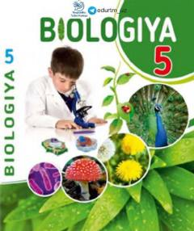

55-sinf o'quvchilari uchun biologiya fanidan rasmiy darslik.
Ushbu darslik O'zbekiston Respublikasi umumiy o'rta ta'lim maktablarining 5-sinf o'quvchilari uchun mo'ljallangan biologiya fani darsligi bo'lib, tirik organizmlar, o'simliklar, hayvonlar, bakteriyalar va zamburug'lar haqida umumiy ma'lumotlar beradi. Darslikda biologiyaning sohalari, tiriklik xususiyatlari, ekologik tushunchalar va tabiatni muhofaza qilish mavzulari yoritilgan. Kitob 2020-yilda qayta ishlangan va to'ldirilgan holda nashr etilgan.